|
Roda JC - Rijnsburgse Boys (4-0) 21 september 2005
|
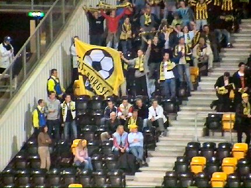
De supporters van de Rijnsburgse Boys arriveerden per dubbeldekker en
mochten plaatsnemen in de uiterste westhoek van de noordtribune. Het is
21 september, dus nog net op tijd voor een potje zomeravondvoetbal.
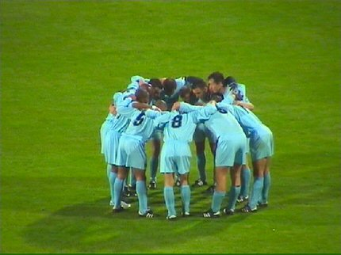
De boys van Rijnsburg in retraite.
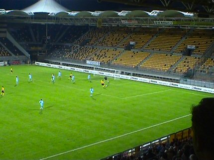
Andres Oper scoort 1-0
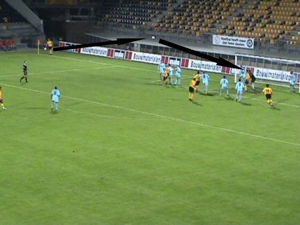
Een hoekschop wordt verzonden naar Vicelich die 2-0 inkopt.
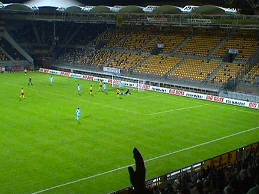
En ook deze zien de krap 1000 supporters aankomen: Sergio 3-0. Na elke
goal weerklinkt een stompzinnig "You're a shining star".
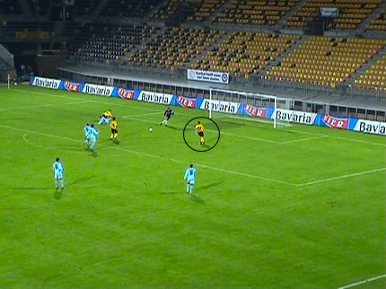
Deze slag gaat Oper winnen.
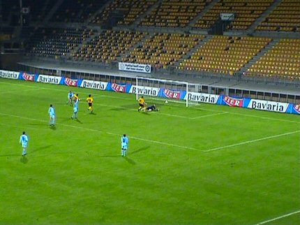
4-0! 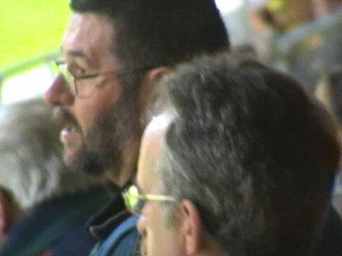
Undercover ;-) 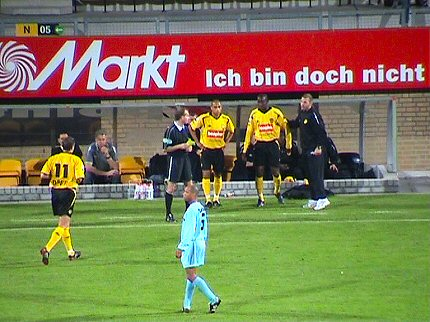
In de tweede helft een dubbele wissel. Cissé en Cristiano (eindelijk fit) komen
voor Derksen en Oper. Een dubbele blunder naar achteraf blijkt want Cissé
bakt er niks van en de coaching van Derksen wordt node gemist.
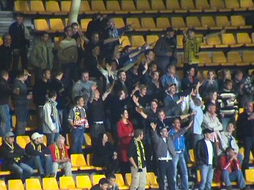
Bovenin west werd er af en toe sfeer gemaakt. "Can you hear....."
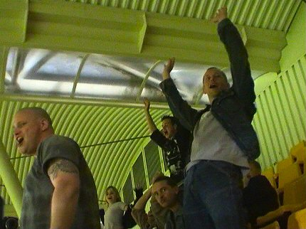
De die-hards van Z16 reageren met de wave.
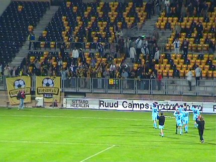
De tweede helft is nauwelijks interessant. Hier gaan de RBB zich bedanken
bij de meegereisde supporters.
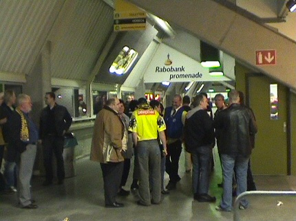
De Kickoff was weer eens gesloten en in de omloop ging ook alles meteen
dicht.
In de volgende ronde KNVB-beker loot
Roda tegen Go Ahaed Eagles.......
© Koempels Pleasure Dome
|